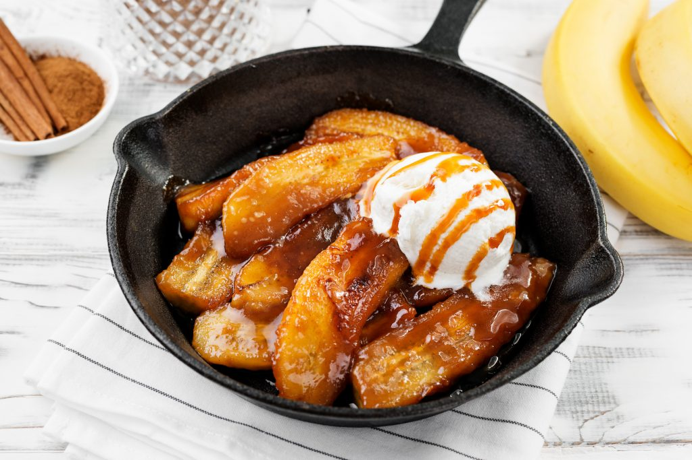

Bananas Foster is an iconic dessert created in New Orleans in 1951. It consists of bananas sautéed in a combination of rum, brown sugar, banana liqueur, butter, and spices. When the bananas are slightly tender and begin to brown, cooks set the alcohol on fire with the famous flambé technique. Bananas are usually served with a scoop or two of vanilla ice cream.
Meal prep time : 20 minutes
Servings : 4